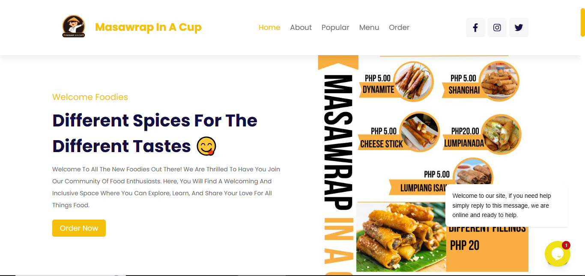
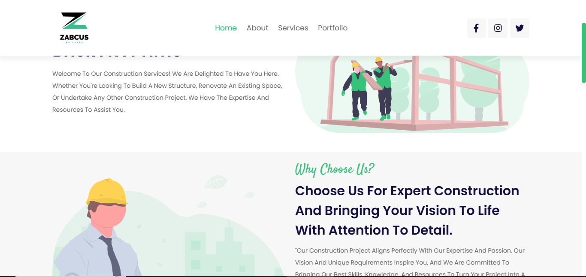

masawrap.vercel.app↗

MasaWrap
FOOD & HOSPITALITYA welcoming digital home for a local food brand. Bringing its menu, personality, and flavors to the web.
HELLO, WORLD. I’M JHUN.
Full-stack developer & IT educator
I turn ideas into thoughtful digital experiences.
Building for the web, sharing what I learn, and
making technology work for people.
A few ideas brought to life on the web.

A welcoming digital home for a local food brand. Bringing its menu, personality, and flavors to the web.

A professional web presence for a construction business, connecting its services with its next client.
Showing 2 projects
I’m Jhun Lester Cervantes, a freelance software developer based in La Union, Philippines. I work across frontend and backend development to turn practical problems into usable software.
Alongside building, I teach application development. I enjoy making complex ideas easier to understand and helping others bring their own ideas to life.
Let’s connect on LinkedIn ↗The tools I reach for to get things done.
LANGUAGES & FRAMEWORKS
WORKSPACE & TOOLS
The right tool for the problem at hand.
Responsive websites and web applications, with thoughtful interfaces and practical backend solutions.
Build something together ↗Clear layouts and approachable experiences that help people find what they need and take the next step.
Talk about your idea ↗Application development guidance, technical problem-solving, and a patient approach to sharing knowledge.
Start a conversation ↗GOOD THINGS START WITH A HELLO
For projects, collaborations, or a friendly conversation.
My inbox is open.
Loading GitHub activity…
GitHub activity is temporarily unavailable.
View on GitHub ↗Public GitHub activity via GitHub Contributions API ↗